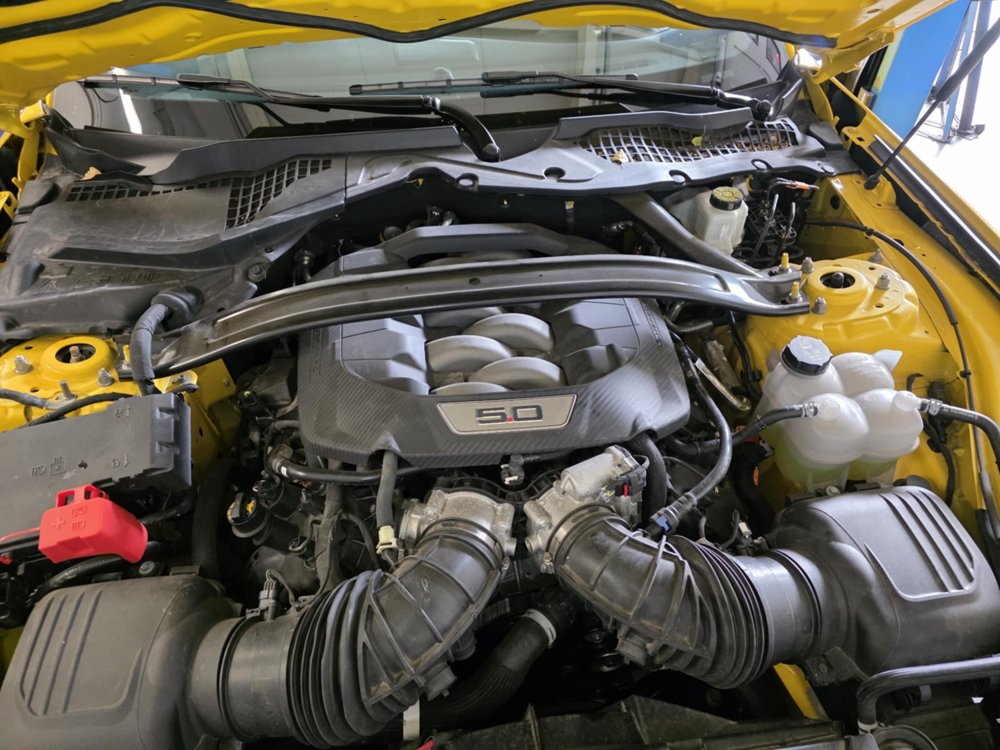
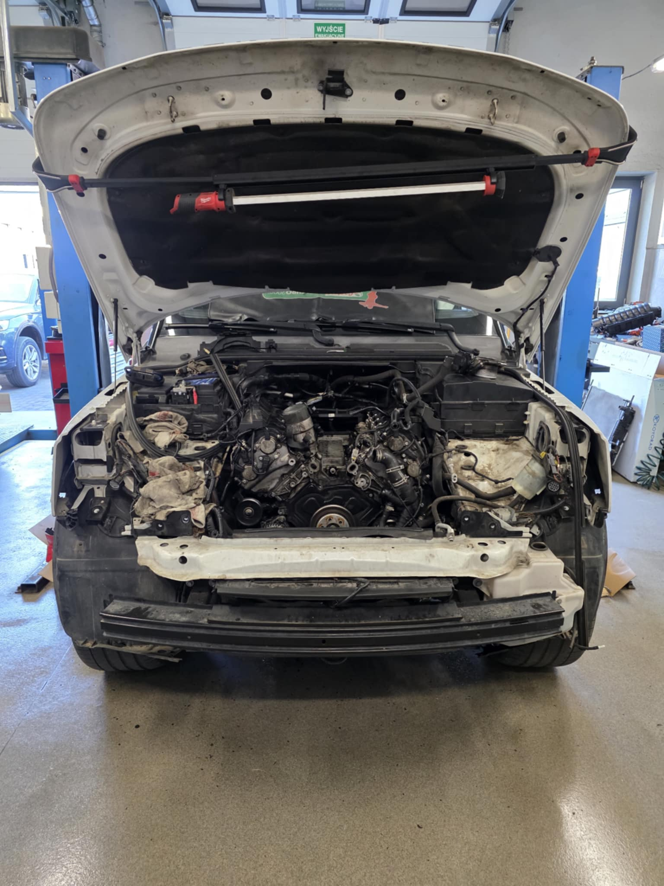

Historia i Misja
Warsztat Prekta Auto Artur Pawlak to miejsce na mapie Łodzi, gdzie inżynieria spotyka się z pasją. Znajdujemy się na Retkini, przy ulicy Jarzynowej 52. Od lat specjalizujemy się w obsłudze najbardziej wymagających marek motoryzacyjnych świata.
Naszą specjalnością jest grupa VAG (Volkswagen, Audi, Bentley) oraz Porsche. Doskonale rozumiemy konstrukcję tych pojazdów – od legendarnych, 5-cylindrowych silników Turbo, po współczesne, skomplikowane układy hybrydowe i systemy W12.
Jako część sieci Q-Service Castrol, gwarantujemy najwyższy standard usług, zachowując przy tym indywidualne podejście do każdego klienta i samochodu. Nie wymieniamy podzespołów "na ślepo". Diagnozujemy, analizujemy i naprawiamy, przywracając autom fabryczną sprawność.

#VAG_Legend 2.2 Turbo

#American_Muscle

#British_Engineering